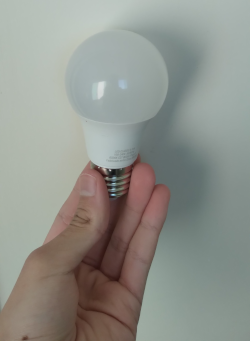

Reciclagem Energética
A reciclagem energética é uma tecnologia utilizada para transformar resíduos em energia térmica ou elétrica. Ela se aplica aos resíduos que não podem ser reutilizados ou reciclados fisicamente, biologicamente ou quimicamente. Esses resíduos são queimados, produzindo vapor que move uma turbina, gerando energia elétrica por meio da energia cinética. A reciclagem energética é uma alternativa para o descarte inadequado dos resíduos, pois promove a redução do volume de lixo e a produção de energia a partir de materiais que seriam descartados. Segundo o site engenharia360, uma tonelada de plástico pode produzir cerca de 650 kWh de energia. Vale ressaltar que a reciclagem energética não substitui a reciclagem convencional, que prioriza a reutilização dos materiais e a redução do consumo de recursos naturais.
Imagem de uma mão segurando uma lâmpada
Passo a passo Reciclagem Energética
A reciclagem energética é um processo complexo que envolve vários passos. Abaixo, os passos principais do processo de reciclagem energética, com base nas informações encontradas nos resultados de busca fornecidos:
-
Coleta de resíduos: O processo de reciclagem energética começa com a coleta dos resíduos que não podem ser reciclados fisicamente, biologicamente ou quimicamente. Esses resíduos são aqueles que já não podem ser reutilizados e reciclados de outras formas.
-
Separação dos resíduos: Depois de coletados, os resíduos são separados e classificados de acordo com o tipo de material, como plástico, papel, vidro, madeira, resíduos orgânicos etc.
-
Processamento dos resíduos: Em seguida, os resíduos são processados para que possam ser transformados em energia térmica e/ou elétrica. Isso ocorre por meio de processos como a incineração, gaseificação ou pirólise, que promovem a combustão dos resíduos e geram calor ou vapor.
-
Geração de energia: A energia térmica ou elétrica gerada a partir da combustão dos resíduos é utilizada para movimentar turbinas que geram eletricidade, através da energia cinética.
-
Tratamento dos gases resultantes da combustão: Durante o processo de combustão, gases são produzidos, sendo que alguns deles são nocivos à saúde e ao meio ambiente. Por isso, é importante tratá-los adequadamente antes de liberá-los na atmosfera.
-
Descarte dos resíduos: Depois de todo o processo, o que sobra dos resíduos é descartado, geralmente na forma de cinzas. Essas cinzas podem ser utilizadas para diversas finalidades, como na fabricação de cimento ou na construção de estradas.
É importante ressaltar que a reciclagem energética deve ser utilizada como uma forma complementar de gestão de resíduos, e não como substituta da reciclagem convencional e outras formas de tratamento de resíduos, que são consideradas mais sustentáveis e ecologicamente corretas.